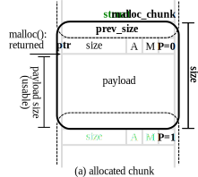
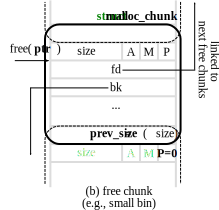
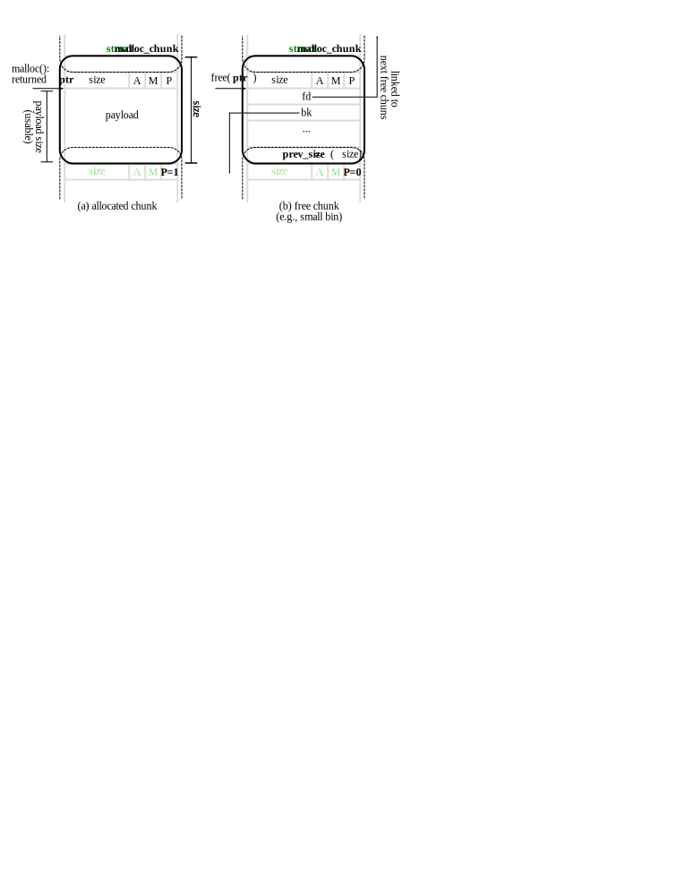
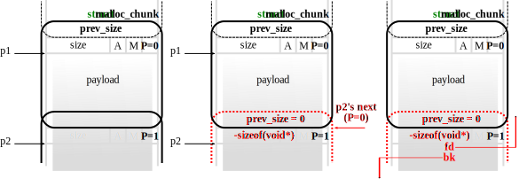
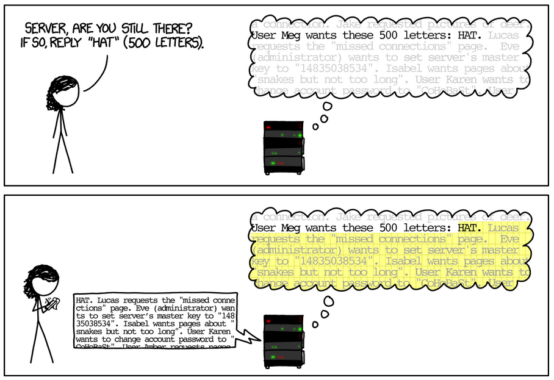

Trends of Vulnerability Classes

Ref. Exploitation Trends: From Potential Risk to Actual Risk, RSA 2015
Taesoo Kim
Taesoo Kim
Ref. Exploitation Trends: From Potential Risk to Actual Risk, RSA 2015
// allocate a memory region (an object)
void *malloc(size_t size);
// free a memory region
void free(void *ptr);
// allocate a memory region for an array
void *calloc(size_t nmemb, size_t size);
// resize/reallocate a memory region
void *realloc(void *ptr, size_t size);
// new Type == malloc(sizeof(Type))
// new Type[size] == malloc(sizeof(Type)*size)| Allocators | B | I | C | Description (applications) |
|---|---|---|---|---|
| ptmalloc | ✓ | ✓ | ✓ | A default allocator in Linux |
| dlmalloc | ✓ | ✓ | ✓ | An allocator that ptmalloc is based on |
| jemalloc | ✓ | ✓ | A default allocator in FreeBSD | |
| tcmalloc | ✓ | ✓ | ✓ | A high-performance allocator from Google |
| PartitionAlloc | ✓ | ✓ | A default allocator in Chromium | |
| libumem | ✓ | ✓ | A default allocator in Solaris |
| Allocators | B | I | C | Description (applications) |
|---|---|---|---|---|
| ptmalloc | ✓ | ✓ | ✓ | A default allocator in Linux |
| dlmalloc | ✓ | ✓ | ✓ | An allocator that ptmalloc is based on |
| jemalloc | ✓ | ✓ | A default allocator in FreeBSD | |
| tcmalloc | ✓ | ✓ | ✓ | A high-performance allocator from Google |
| PartitionAlloc | ✓ | ✓ | A default allocator in Chromium | |
| libumem | ✓ | ✓ | A default allocator in Solaris |
struct malloc_chunk {
// size of "previous" chunk
// (only valid when the previous chunk is freed, P=0)
size_t prev_size;
// size in bytes (aligned by double words): lower bits
// indicate various states of the current/previous chunk
// A: alloced in a non-main arena
// M: mmapped
// P: "previous" in use (i.e., P=0 means freed)
size_t size;
[...]
};
struct malloc_chunk {
[...]
// double links for free chunks in small/large bins
// (only valid when this chunk is freed)
struct malloc_chunk* fd;
struct malloc_chunk* bk;
// double links for next larger/smaller size in largebins
// (only valid when this chunk is freed)
struct malloc_chunk* fd_nextsize;
struct malloc_chunk* bk_nextsize;
};


#define unlink(AV, P, BK, FD)
/* (1) checking if size == the next chunk's prev_size */
* if (chunksize(P) != prev_size(next_chunk(P)))
* malloc_printerr("corrupted size vs. prev_size");
FD = P->fd;
BK = P->bk;
/* (2) checking if prev/next chunks correctly point to me */
* if (FD->bk != P || BK->fd != P)
* malloc_printerr("corrupted double-linked list");
* else {
FD->bk = BK;
BK->fd = FD;
...
* }Fast bin dup House of einherjar
Fast bin dup into stack House of orange
Fast bin dup consolidate Tcache dup
Unsafe unlink Tcache house of spirit
House of spirit Tcache poisoning
Poison null byte Tcache overlapping chunks
House of lore *Unsorted bin into stack
Overlapping chunks 1 *Fast bin into other bin
Overlapping chunks 2 *Overlapping small chunks
House of force *Unaligned double free
Unsorted bin attack *House of unsorted einherjarNOTE. * are what our group recently found and reported!

(fastbin)
Bins
sz=16 [ -]--->[fd]--->[fd]-->NULL
sz=24 [ -]--->[fd]--->NULL
sz=32 [ -]--->NULL
...
(fastbin)
Bins ptr ptr
sz=16 [ -]--->[XX]--->[XX]--->[fd]--->[fd]-->NULL
sz=24 [ -]--->[fd]--->NULL
sz=32 [ -]--->NULL
...char *ptr = malloc(sz=16);
free(ptr);
free(ptr); // BUG!
ptr1 = malloc(sz=16) // hijacked!
ptr2 = malloc(sz=16) // hijacked! (fastbin)
Bins
+--------------+
| |
sz=16 [ -]--+ [XX]--->[XX] +-->[fd]--->[fd]-->NULL
sz=24 [ -]--->[fd]--->NULL
sz=32 [ -]--->NULL
...
|<--- len'' --->|
-> req: [REQ][len'][payload .... ]
<- res: [RES][len'][payload .... ][padding]
len' == len''?
what if len' < len''?
what if len' > len''? unsigned int payload;
...
+ /* Read type and payload length first */
+ if (1 + 2 + 16 > s->s3->rrec.length)
+ return 0; /* silently discard */
+
+ hbtype = *p++;
+ n2s(p, payload);
+ // NOTE. int overflow?
+ if (1 + 2 + payload + 16 > s->s3->rrec.length)
+ return 0; /* silently discard per RFC 6520 sec. 4 */
+ pl = p;
+
if (hbtype == TLS1_HB_REQUEST) { ... }void vmacache_flush_all(struct mm_struct *mm) {
/* Single threaded tasks need not iterate the entire list of
* process. We can avoid the flushing as well since the mm's seqnum
* was increased and don't have to worry about other threads'
* seqnum. Current's flush will occur upon the next lookup. */
if (atomic_read(&mm->mm_users) == 1)
return;
...
}